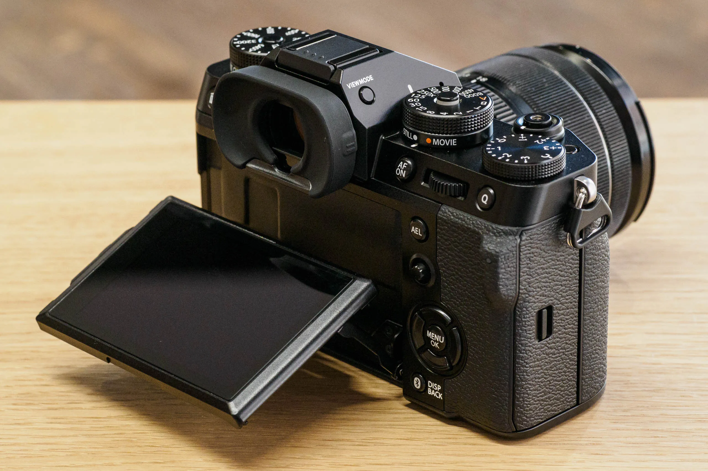
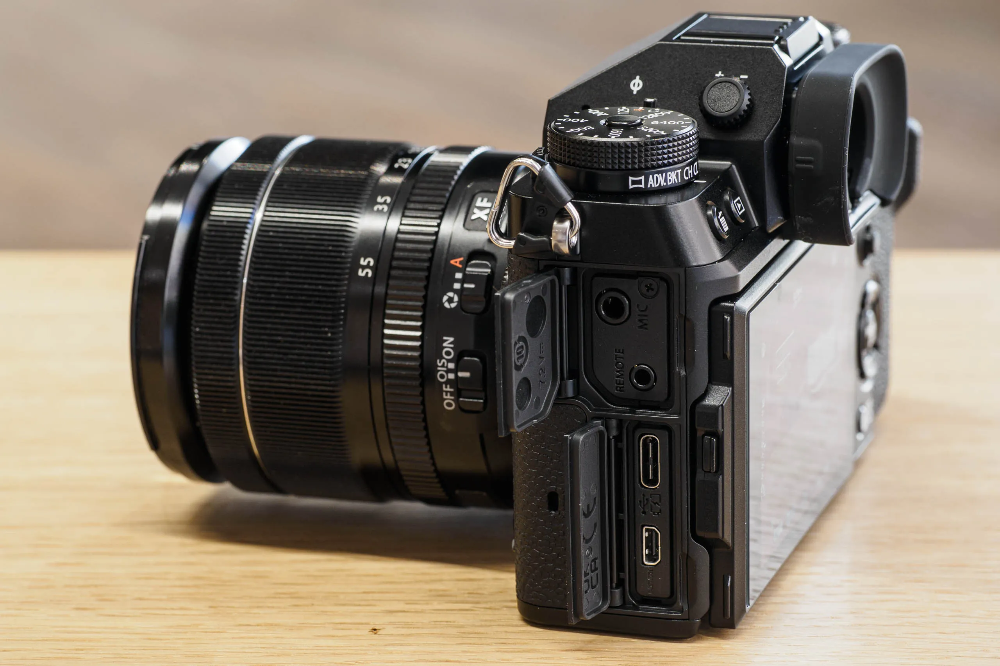

Conversation
Ideas exchange News review
 Ideas and News: EQUIPMENT
Ideas and News: EQUIPMENT

Powerworks HPW-1000 DJ Mono Hand-Held Headphone
With a lightweight build and an ergonomic padded handle, this headphone is perfect for both professional and aspiring DJs. The headphone is equipped with a large neodymium driver, which provides powerful sound output and ensures a rich listening experience. This driver enhances bass response while maintaining clarity across the entire frequency range.
The closed-back design effectively isolates sound, preventing external noise from interfering with your listening experience. This feature is crucial for DJs who need to focus on their mixes in noisy environments.
The movable earpiece allows for flexible positioning, ensuring a comfortable fit regardless of head shape. This adaptability helps users find the perfect angle for optimal sound delivery.
The soft, padded ear cushions provide comfort during long mixing sessions. These cushions also help to seal the ear, enhancing sound isolation and minimizing ear fatigue.
The ergonomic design of the handle enhances comfort and usability. DJs can easily hold and manipulate the headphones without straining their hands, making it ideal for extended periods of use.
The generous length of the 4m spiral cable offers flexibility and freedom of movement. This length is particularly beneficial for DJs who may need to move around while mixing.
The headphone connects via a robust XLR to Stereo 6.3mm jack, providing a secure and reliable connection to various audio devices, including mixers and sound systems.
Weighing only 152g without the cable, the HPW-1000 is lightweight, making it easy to wear for extended periods without causing discomfort or fatigue.
The dynamic transducer delivers an impressive frequency response range of 10-22,000 Hz. This broad range allows the headphones to reproduce both deep bass and crisp highs, catering to all music genres.
With a sensitivity rating of 96 dB/mW, the headphones provide loud and clear sound without requiring excessive power, making them suitable for use with various audio devices.
Ideas and News: MUSIC
Cuz there's something coming, Wait and see. Something big is coming, For you and me. [1,4]
We have to love, Vision isn't a crime. We have a love, Positive mental. [2,3,5]
released January 1, 2024 All music & lyrics written, produced and performed by Bjak for RealDEEP Recordings ©2024.
Ideas and News: EVENTS
A 2nd Annual HOUSE PARTY IN Garankuwa at Lentswe pub; catering all House Music Lovers around filled with lots of quality house and lots of fashion. its a colourful event for the masses
Garankuwa Lentswe Pub, Mapetla, Mmakau, 0208
Date: #From 20th Dec 2024 #Friday* ➡️➡️21st Dec 2024 #Saturday*
Ideas and News: GEAR
KRK CLASSIC 8 powered studio monitors
Building on KRK's legacy of sonic accuracy and performance, the new KRK CLASSIC 8 powered studio monitors incorporate over 30 years of innovation from the world's leading studio monitor manufacturer. Borrowing concepts from previous ROKIT lines—some of the most used studio monitors in the world, the CLASSIC 8 defaults to a new flat frequency solution towards more critical listening—translating into more accurate mixes. With the optional ability to engage the +2 dB KRK Bass Boost, the CLASSIC 8 can also provide the enhanced bass response and sound that music creators around the world have loved for years.

The CLASSIC 8 is an active (self-powered) two-way studio monitor that utilizes a 1" textile soft dome tweeter paired with a 8" glass aramid woofer. The built-in power amplifiers provide a total of 100 watts of power, with a 75 watt amp driving the woofer, and a 25 watt amp for the tweeter.

Ideas and News: TECH
Apple iPhone 16
Explore new tools that help you write, focus, and communicate.
Create fun, original images that are truly personal to you.
With all-new superpowers, Siri will be able to assist you like never before.
The first iPhone built for Apple Intelligence. Personal, private, powerful.2
Camera Control. Get the perfect photo. While barely lifting a finger.
The all-new chip that empowers Apple Intelligence. And you.
A big boost in battery life
New Ultra Wide camera. Take your photos further. And closer.
Ideas and News: FASHION
AMIRI CRYSTAL MA-1 BLACK
R34,130.00 ZAR

Description:
The MA-1, an ode to the bold, amplified sneaker silhouettes of '90s West Coast skate renegades, appears in seasonal fabrications for Pre-Fall 2024. The Crystal MA-1 is crafted on an exaggerated rubber outsole with a crystal-embellished leather upper and features house logos on the side and back with double lace fastening.PRE-FALL 2024 COLLECTION

MADE IN VIETNAM
UPPER: LEATHER, POLYESTER, POLYURETHANE, SOLE: RUBBER
Free Shipping & Returns Duties & Taxes Included

Ideas and News: AUTOMOBIL

Aston Martin Vanquish
Symphony of the senses -
The new Aston Martin Vanquish honours its name with an elegant display of domination. A new front mid-mounted 5.2-litre twin-turbo V12 arms the rear wheels with merciless power.
The commanding appearance of the 2-seater graces roads with unparalleled sophistication and unprecedented technology.
This is the impregnable peak of British mastery. All will be Vanquished.
Engineering and Performance - The new Vanquish is a conqueror for the ages. Engaging yet exhilarating dynamics come together to usher in a revolution of refinement and ferocity.
Power PS - 835
Top Speed MPH - 214
0-62 MPH S - 3.3
Torque Nm - 1 000
INTERIOR - At the apex of luxury and innovation, the Aston Martin Vanquish ushers in a new dawn of driving.

EXTERIOR - With its assertive presence and elegant proportions, the Aston Martin Vanquish seamlessly blends sophistication and power. Each is a uniquely crafted work of art.

Ideas and News: GADGET

FUJIFILM X-T5
Photography First -
X-T1 was originally released in 2014 to celebrate Fujifilm’s 80th anniversary.
It would go on to lead a mirrorless camera revolution.
Almost a decade and five generations later, Fujifilm’s latest imaging technology has come to X-T5, bringing photographers unrivalled image quality in a timeless, classic, and beloved camera body.
Five Generations of Technological Evolution
Fifth-generation X-Trans CMOS 5 HR sensor and X-Processor 5 bring the most advanced imaging technologies ever to X Series
High Resolution 40.2MP BSI Imaging Sensor
Twice the processing speed of X-Processor 4
.jpg)
Feature 1 - Dial operation The essence of photography
Feature 2 - Three-way tilting LCD Versatility for all occasions
Feature 3 - 557g compact body Enhanced mobility.
Three top-plate dials - Three dials control ISO, shutter speed, and exposure compensation from the camera’s top-plate. Together with the aperture ring on most XF lenses, all exposure settings can be checked and adjusted before powering on the camera. Create with confidence and concentrate on making an image.
Lightweight, high performance - X-T5 features a five-axis in-body image stabilization (IBIS) system that provides up to 7.0 stops of compensation and a 3.69 million dot EVF with an 0.8x magnification ratio. Despite this, the camera body only weighs 557g (1.23lb). Dials and buttons provide easy operation, letting life’s most precious moments stand a chance of being documented to see another day.
Three-way tilting LCD - A three-way tilting LCD offers enhanced versatility, particularly when working at waist level or in portrait orientation. The combination of tilting LCD and center viewfinder aligns the lens, camera, and photographer on the optical axis, for a more comfortable and intuitive image-making experience.

19 Film Simulation modes inside of X-T5 digitally replicate the look of the classic photographic film stocks developed by Fujifilm for over 85 years. Reproduce the classic colors and tones that Fujifilm are known for, or add an artistic flair and start to Build Your Legacy.
White Balance - Fine adjustments can be made to Auto White Balance (AWB) by selecting one of three modes: Auto, White Priority, and Ambience Priority. Set to White Priority, white is more likely to be reproduced as white under incandescent lighting. However, when Ambience Priority is set, scenes will be photographed with the natural lighting characteristics of the scene preseved. Under incandescent lighting, this will generally result in images with warmer white tones.
AWB driven by AI technology - New deep-learning AI technology optimizes Auto White Balance performance in X-T5 by accurately identifying warm, orange-tinged colors to assist with the camera’s Auto White Balance accuracy.
Subject-detection autofocus - X-Processor 5 features subject-detection AF that is built using Deep-Learning AI Technology. In addition to providing incredible AF tracking and detection for human faces and eyes, X-T5 can now also automatically detect and track a broad range of subjects, which include animals, birds, cars, motorcycles, bicycles, airplanes, and trains. This allows photographers to concentrate on composition and creativity, confident that X-T5 will track focus accurately.
Updated AF algorithm - X-T5’s higher pixel count increases the number of phase detection pixels, which improves AF-S focusing accuracy on subjects including landscapes and portraits. The camera also incorporates an improved AF prediction algorithm, newly developed for the X-H2S, enabling stable focusing even when using AF-C.
A World of Detail 160MP Pixel Shift Multi-Shot - X-T5 features Pixel Shift Multi-Shot with the help of the Pixel Shift Combiner software, can produce a single, ultra-high-resolution 160MP image with a single touch of the shutter button. Using in-body image stabilization to shift the sensor by a half pixel between each frame, X-T5 precisely makes 20 frames to ensure every red, green, and blue pixel has the same information. The result is a final image with almost no false colors visible.
1/180,000 sec shutter speed - X-T5 has a maximum electronic shutter speed of 1/180,000, an increase of approximately 2.5 stops compared to other X Series cameras. Use it with wide apertures in extremely bright environments for more creative options, or to freeze action at the perfect moment.
ISO 125 standard sensitivity - X-Trans CMOS 5 HR has a more light-efficient pixel structure. ISO 125 – previously an extended sensitivity – is now available natively.
Supports HEIF image format - X-T5 supports the HEIF image format, which delivers 10-bit image quality in files up to 30% smaller than standard JPEGs. The next chapter in delivering high-quality results straight out of camera has officially begun for X Series.
Increased battery life - Thanks to the reduced power consumption of the X-Processor 5, the battery life for still images has been significantly increased from approximately 600 to 740 frames* compared to the X-T4.
Highly reliable, weather-resistant body - X-T5 features 56 weather-sealed points for high levels of dust and moisture resistance. It can also operate in temperatures as low as -10°C (14°F).
6.2K/30p 4:2:2 10-bit - 6.2K movies can be recorded internally at 30p in 4:2:2 10-bit color, delivering high-definition footage with rich color detail.
F-Log2 support - In addition to F-Log, X-T5 also supports F-Log2, which records an expanded dynamic range of 13+ stops.* This range is wider than current F-Log, broadening post-production potential.
RAW output via HDMI - When combined with an ATOMOS HDMI device, RAW video output from the X-T5 can be recorded as 12-bit Apple ProRes RAW at resolutions up to 6.2K and frame rates up to 29.97fps. When combined with Blackmagic Design Video Assist 12G, RAW video output from the camera can be recorded as Blackmagic RAW at resolutions up to 6.2K and frame rates up to 29.97fps.

Advanced operation and controls -
Dual SD card slots - X-T5 features dual SD card slots, both with UHS-II compatibility.
Optional accessory Hand Grip MHG-XT5 - MHG-XT5 substantially improves the ability to handhold the camera and does not need to be removed when changing a battery or SD card. An Arca-Swiss style dovetail is also elegantly machined into the bottom of the grip, making it compatible with tripod heads that use the broadly used quick-release system.
Ideas and News: APP

Signal App
Speak Freely - Say "hello" to a different messaging experience. An unexpected focus on privacy, combined with all of the features you expect.
Share Without Insecurity - State-of-the-art end-to-end encryption (powered by the open source Signal Protocol) keeps your conversations secure. We can't read your messages or listen to your calls, and no one else can either. Privacy isn’t an optional mode — it’s just the way that Signal works. Every message, every call, every time.

Say Anything - Share text, voice messages, photos, videos, GIFs and files for free. Signal uses your phone's data connection so you can avoid SMS and MMS fees.
Speak Freely - Make crystal-clear voice and video calls to people who live across town, or across the ocean, with no long-distance charges.
Make Privacy Stick - Add a new layer of expression to your conversations with encrypted stickers. You can also create and share your own sticker packs..
Get Together with Groups - Group chats make it easy to stay connected to your family, friends, and coworkers.

No ads. No trackers. No kidding. - There are no ads, no affiliate marketers, and no creepy tracking in Signal. So focus on sharing the moments that matter with the people who matter to you.
Free for Everyone - Signal is an independent nonprofit. We're not tied to any major tech companies, and we can never be acquired by one either. Development is supported by grants and donations from people like you.
Ideas and News: ENTERTAIN

Lentswe'sPub Ko Rankuwa
Garankuwa Pretoria, Mapetla, Mmakau, 0208